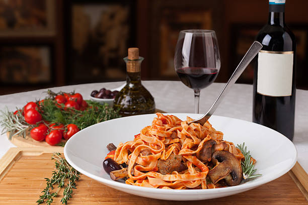

The Story
We often forget that the businesses are run by humanity, this is how you connect with other walks of life by sharing stories and where they’ve been, where they are going and the challenges they had to endure and how they’ve grown. The matriarch of the family is my great grand mother Matty Pierce who would travel back and fourth to Sicily in 1927 to visit friends and family members. she spent a quite amount of time there as a teen consuming grapes off the vines from her vineyard and learning to cook long established Sicilian cuisines alongside her cousins. Her life was changed forever because she traveled the world so much and she gained a diverse background in cooking. My great grandma would cook her traditional Sicilian dishes to remind her of travel and what foods gave her inspiration and years later, they was passed down to all generations which landed in my hands and now Chef Donovin is bringing them to your table at home or restaurant.
Vision
Our vision for the future is to grow and learn along with our customers. In doing so, we aim to provide an atmosphere that enables this growth and fuels the passion that lives within the essence of the brand.